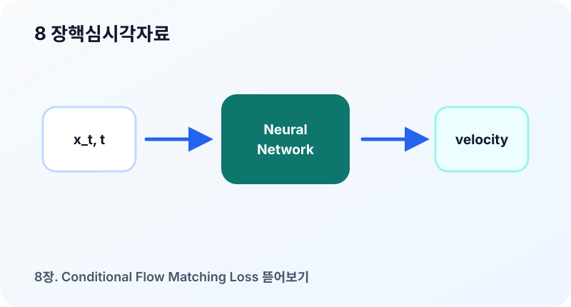

8장. Conditional Flow Matching Loss 뜯어보기¶
이 장의 질문¶
Flow Matching의 핵심 손실은 한 줄로 쓸 수 있다. 하지만 그 한 줄을 실제 코드로 옮기려면 어떤 텐서를 만들고, 어떤 차원을 맞추고, 어떤 값에 그래디언트를 흘려야 하는지 알아야 한다. CFM(Conditional Flow Matching) loss는 수식으로는 단순하지만 구현에서는 작은 실수가 결과를 크게 흔든다.
이 장에서는 Conditional Flow Matching loss를 학습 루프 관점에서 해부한다. 수식의 각 기호가 실제 텐서에서 무엇을 의미하는지, 시간 \(t\)를 어떻게 샘플링하는지, 목표 속도는 어떻게 만들며, 어떤 형태의 모델 출력과 비교해야 하는지를 정리한다.
기본 손실식¶
Conditional Flow Matching의 대표적인 손실은 다음과 같다.
여기서 각 항은 다음을 뜻한다.
- \(t\): 생성 과정의 시간
- \(z\): 조건부 경로를 정하는 변수
- \(x_t\): 시각 \(t\)의 중간 샘플
- \(u_t(x_t|z)\): 조건부 목표 속도
- \(v_\theta(x_t,t)\): 모델이 예측한 속도
실제 구현에서는 보통 \(z=(x_0,x_1)\)로 둔다. 그러면 손실은 다음처럼 볼 수 있다.
단, 이 식은 직선 경로일 때의 단순 형태다. 다른 경로를 쓰면 \(x_t\)와 \(u_t\)의 식이 달라진다.
텐서 shape로 읽기¶
이미지 배치를 예로 들자. 데이터 배치 \(x_1\)의 shape가 다음과 같다고 하자.
노이즈 \(x_0\)도 같은 shape로 샘플링한다.
시간 \(t\)는 배치마다 하나씩 샘플링하는 경우가 많다.
하지만 \(x_t=(1-t)x_0+tx_1\)을 계산하려면 \(t\)가 이미지 텐서와 broadcast될 수 있어야 한다. 따라서 구현에서는 보통 다음과 같은 shape로 바꾼다.
그 후 중간 샘플을 만든다.
목표 속도는
이고 shape는 \(x_t\)와 같다.
모델 출력도 같은 shape여야 한다.
따라서 MSE(Mean Squared Error, 평균제곱오차)는 모든 픽셀과 채널에 대해 평균을 낸다.
시간 \(t\)는 어떻게 뽑는가¶
가장 기본적인 선택은 균등분포다.
이 선택은 모든 시간 구간을 같은 비중으로 학습한다. 단순하고 많이 쓰이지만, 항상 최선은 아니다. 어떤 경로에서는 특정 시간대의 속도장이 더 복잡할 수 있다. 예를 들어 \(t\)가 데이터에 가까워지는 후반부에서 세부 구조가 급격히 나타난다면 후반부 학습이 더 중요할 수 있다.
그럼에도 입문 단계에서는 균등 샘플링으로 시작하는 것이 좋다. 이유는 세 가지다.
- 수식과 구현이 가장 단순하다.
- loss 해석이 명확하다.
- 경로 설계와 모델 구조를 먼저 이해하기 좋다.
나중에는 importance sampling이나 시간 가중 loss를 고려할 수 있다.
loss의 MSE는 무엇을 강제하는가¶
MSE는 모델 출력이 목표 속도와 가까워지도록 한다. 하지만 여기서 중요한 것은 “정답 이미지”를 맞히는 것이 아니라 “변화량”을 맞힌다는 점이다.
직선 경로에서 \(u=x_1-x_0\)이므로 모델은 현재 중간 상태 \(x_t\)가 최종 데이터 \(x_1\)로 가기 위해 어떤 방향으로 움직여야 하는지 학습한다. 여러 조건부 경로가 같은 \(x_t\) 근처를 지나면 모델은 그 속도들의 평균을 배운다.
그래서 CFM loss는 다음과 같은 성격을 가진다.
- 입력은 중간 샘플이다.
- 출력은 중간 샘플의 다음 위치가 아니라 속도다.
- 목표는 특정 샘플 쌍의 조건부 속도다.
- 최적 모델은 marginal velocity를 근사한다.
이 네 문장을 구분하지 못하면 loss를 diffusion의 noise prediction loss와 혼동하기 쉽다.
코드 구조로 바꾸기¶
직선 경로를 사용하는 가장 단순한 CFM step은 다음 논리로 구성된다.
x1 = batch
x0 = torch.randn_like(x1)
t = torch.rand(x1.shape[0], device=x1.device)
t_view = t.view(-1, 1, 1, 1)
xt = (1 - t_view) * x0 + t_view * x1
ut = x1 - x0
pred = model(xt, t)
loss = mse(pred, ut)
이 코드는 짧지만, 각 줄의 역할은 명확히 분리되어야 한다.
x0는 시작 분포 샘플이다.x1은 데이터 샘플이다.t는 시간 조건이다.xt는 모델 입력이다.ut는 목표 속도다.pred는 모델이 예측한 속도다.
입문 구현에서 가장 흔한 버그는 t의 shape, ut의 sign, 모델 출력 shape, normalization 범위다.
경로가 바뀌면 loss도 바뀐다¶
직선 경로에서는 목표 속도가 \(x_1-x_0\)로 일정하다. 그러나 일반적인 경로에서는 \(x_t\)와 \(u_t\)가 모두 시간에 따라 달라진다.
예를 들어 다음 형태의 경로를 생각할 수 있다.
그러면 시간 미분은
따라서 path sampler는 \(x_t\)뿐 아니라 \(u_t\)도 함께 반환해야 한다.
실무적으로는 다음 인터페이스가 유용하다.
xt, ut = path.sample(x0, x1, t)
이렇게 해 두면 모델 학습 코드는 경로의 세부 수식에 덜 의존한다. 13장에서 경로 선택을 비교할 때도 같은 인터페이스를 유지할 수 있다.
디버깅 체크리스트¶
CFM loss가 제대로 줄지 않거나 샘플이 이상하면 다음 항목을 점검한다.
- 데이터 normalization 범위가 모델 출력 스케일과 맞는가?
- \(x_0\)와 \(x_1\)의 shape가 완전히 같은가?
- \(t\)가 batch별로 독립적으로 샘플링되는가?
- \(t\)를 모델에는 원래 shape로 넣고, 보간에는 broadcast shape로 쓰는가?
- 목표 속도 \(u_t\)의 부호가 경로 방향과 일치하는가?
- 모델 출력이 \(x_t\)와 같은 shape인가?
- loss가 batch, channel, spatial 차원에서 의도대로 평균되는가?
특히 부호 오류는 샘플링 단계에서 바로 드러난다. \(u_t=x_1-x_0\)이어야 하는데 반대로 쓰면 ODE(Ordinary Differential Equation, 상미분방정식)가 데이터에서 노이즈 방향으로 이동한다.
시각 자료¶

- CFM 학습 파이프라인: \(x_0\), \(x_1\), \(t\)에서 \(x_t\)와 \(u_t\)를 만들고, 모델 출력과 MSE로 비교하는 흐름도.
- 텐서 shape 그림: \(B\times C\times H\times W\) 텐서와 \(B\times 1\times 1\times 1\) 시간 텐서가 broadcast되는 모습을 보여 준다.
- 경로별 목표 속도 비교: 직선 경로와 곡선 경로에서 \(x_t\)와 \(u_t\)가 어떻게 달라지는지 나란히 표시한다.
요약¶
- CFM loss는 모델의 속도 예측 \(v_\theta(x_t,t)\)와 조건부 목표 속도 \(u_t(x_t|z)\) 사이의 MSE다.
- 직선 경로에서는 \(x_t=(1-t)x_0+tx_1\), \(u_t=x_1-x_0\)로 구현이 매우 단순하다.
- 시간 \(t\)는 보통 균등분포에서 샘플링하며, 보간 계산을 위해 broadcast 가능한 shape로 바꿔야 한다.
- 경로를 바꾸면 \(x_t\)와 \(u_t\)의 식도 함께 바뀌므로 path sampler 인터페이스를 분리하는 편이 좋다.
- CFM 구현 디버깅에서는 normalization, 시간 shape, 속도 부호, 출력 shape를 가장 먼저 확인해야 한다.